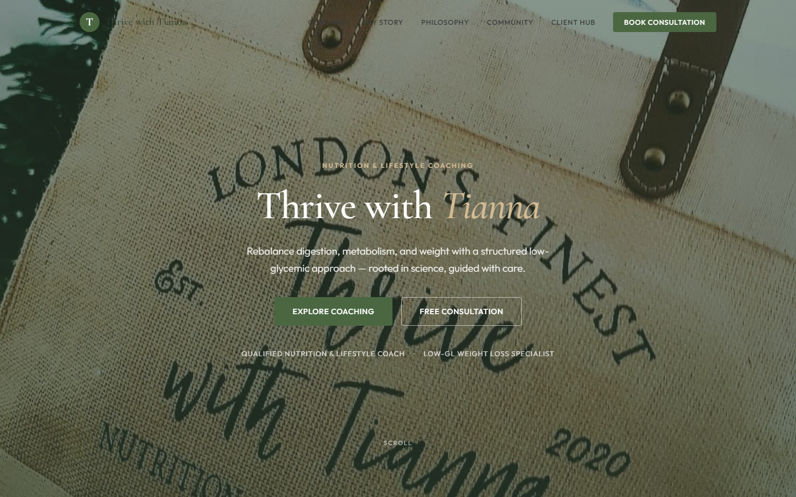
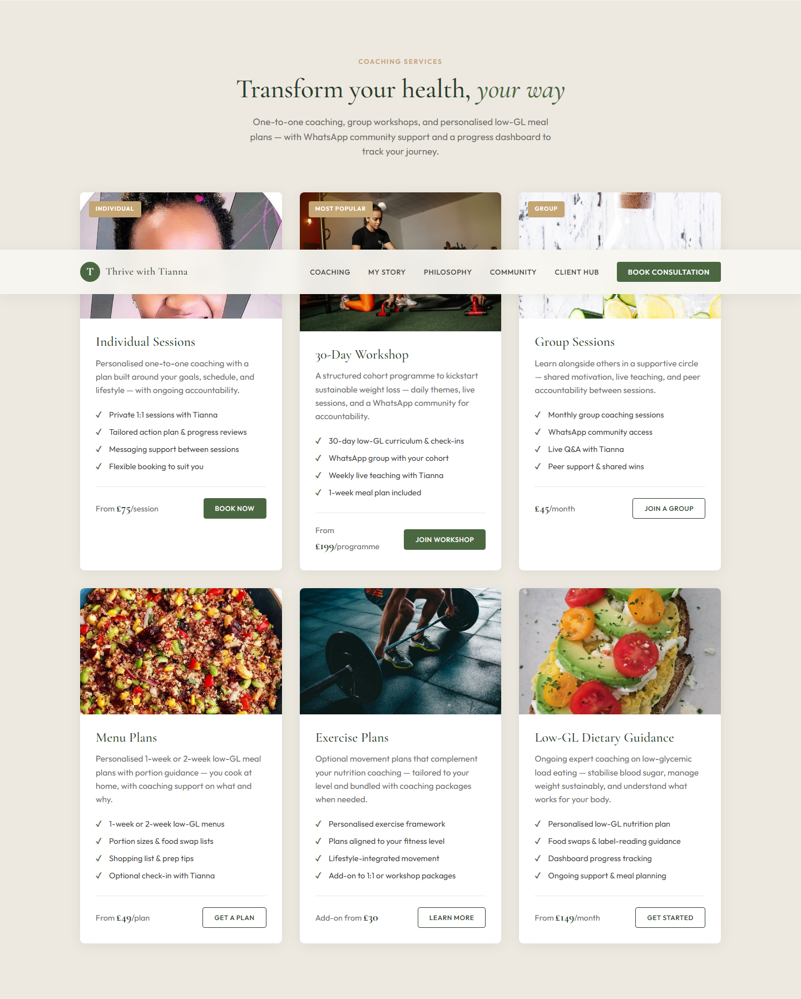

The problem
Adults seeking sustainable weight management are caught between fad diets, generic calorie-counting apps, and coaching that does not scale. A qualified nutrition coach can deliver a structured low-glycemic load (low-GL) method — stabilising blood sugar, reducing inflammation, and building habits that last — but day-to-day accountability still depends on manual check-ins, scattered messaging, and meal plans that live outside the client's daily workflow.
Generic AI assistants sound supportive but do not know what the client ate yesterday, whether they are inside their plan, or how the coach would respond. Trust breaks when advice is disconnected from real logs — and in wellness coaching, trust is the product.
The platform vision
Thrive Coach is designed as a full coaching operating system: marketing and acquisition on the public site, a client portal for logging and progress, and an agentic layer — Your Thrive Coach — that reasons over meal history, menu plans, and adherence before it speaks. The founder remains the authority; the agent extends reach between sessions without replacing clinical judgement or human escalation paths.



What the client portal delivers
The portal is the foundation the agent depends on. Clients log daily meals with portion amounts, see projected glycemic load and plan adherence, track weight and habits over time, and access personalised menu plans assigned by the coach. Workshop and subscription clients share the same progress surface — so coaching conversations always start from a shared, auditable picture rather than memory or screenshots.
- Meal logging — fast capture designed for real life, not spreadsheet discipline
- Deterministic GL view — projected glycemic load and adherence calculated from logged data, not invented by the agent
- Menu plan management — assigned low-GL menus with portions, swaps, and shopping guidance the client cooks at home
- Progress dashboard — weight, streaks, milestones, and programme context (e.g. week N of a cohort)
- Multi-channel support — portal as home base; private messaging and cohort WhatsApp groups where programmes require peer accountability
The agentic layer
Your Thrive Coach behaves like a careful nutrition partner — warm, specific, and never medical. It cites the client's own logs and plan context. Advice follows explicit coaching rules and the Thrive method: low-GL nutrition, sustainable habit change, and clear boundaries (coaching, not clinical treatment).
- Grounded messaging — responses reference actual meals, adherence trends, and assigned plans
- Priority-aware escalation — sensitive or high-risk topics always route to the human coach; routine nudges and celebrations can be automated once trust is earned
- Phased rollout — human-only coaching first, then agent-drafted messages under founder review, then selective auto-send for low-risk, rules-approved scenarios
- Channel discipline — personal health detail stays in private channels; group spaces remain for motivation and curriculum, not clinical exchange
Approach
- Ship the marketing site and service positioning first — clarify the method before scaling technology
- Build logging, GL calculation, and menu adherence before any agent speaks — correct data before intelligent interpretation
- Launch the client portal as the single source of truth for progress; integrate messaging channels around it
- Introduce the agent with founder approval gates; expand automation only where rules are explicit and auditable
- Keep nutrition calculations and categorisation deterministic; the agent coaches and explains — it does not fabricate numbers
Roadmap
Delivery is phased so the business stays useful and trustworthy at every step:
- Live now — public marketing site, service catalogue, community positioning, and client hub proof-of-concept on the main site
- Next — client portal MVP: authentication, meal log, glycemic load and adherence views, coach admin, menu plan assignment
- Then — workshop cohort enrolment, progress digests, rules engine, human-only agent phase with founder review queue
- Later — scaled agent assistance, richer food intelligence, and deeper personalisation across subscription and 1:1 tiers